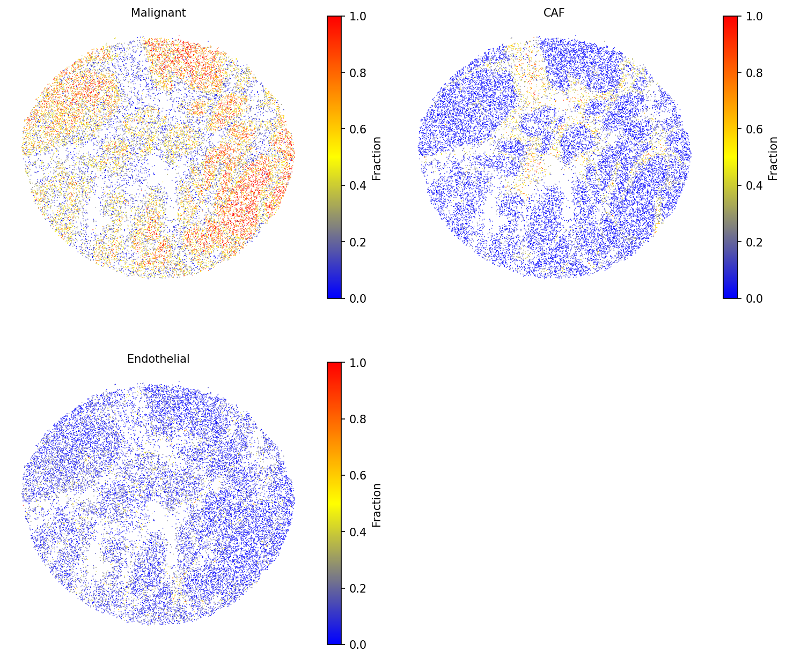
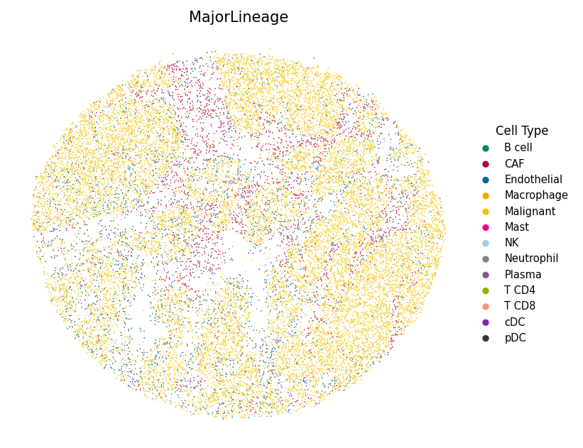

Cell Type Deconvolution for High-Resolution Slide-seq Colorectal Cancer
Python GPU-accelerated Adapted from the SpaCET R tutorial for colorectal cancer Slide-seq
Overview
This tutorial demonstrates how to use spatial-gpu to deconvolve high-resolution spatial transcriptomics data from a colorectal cancer (CRC) sample profiled using the Slide-seq platform (Zhao et al., 2021). Each 10 μm bead captures approximately 1–2 cells, providing near single-cell resolution.
The high-resolution nature of Slide-seq data means that each bead is expected to contain at most 1–2 cells, making the deconvolution problem different from lower-resolution platforms like Visium (~55 μm) or oldST (~100 μm). The SpaCET algorithm handles this by adapting its cell fraction estimation to the platform resolution.
The spatial-gpu package provides a GPU-accelerated Python
implementation of the
SpaCET algorithm
(Nature Communications 14, 568, 2023). All functions work on
AnnData objects and
store results in adata.uns['spacet'].
API Mapping: R SpaCET → spatial-gpu
| R SpaCET | spatial-gpu (Python) |
|---|---|
| library(SpaCET) | import spatialgpu.deconvolution as spacet |
| create.SpaCET.object() | spacet.create_spacet_object() |
| SpaCET.deconvolution() | spacet.deconvolution() |
| SpaCET.visualize.spatialFeature() | spacet.visualize_spatial_feature() |
1. Create SpaCET Object
Load the CRC Slide-seq data into an AnnData object. The dataset
contains 10 μm beads with spatial coordinates and gene expression counts.
import spatialgpu.deconvolution as spacet import anndata as ad # Load Slide-seq CRC data from h5ad file adata = ad.read_h5ad("data/hiresST_CRC/hiresST_CRC.h5ad") # Inspect the object print(adata)
spacet.create_spacet_object(counts, spot_coordinates, platform="SlideSeq").
2. Deconvolve ST Data
Run the two-stage SpaCET deconvolution algorithm for colorectal cancer. Stage 1 estimates the malignant cell fraction using CRC-specific copy number alteration and expression signatures. Stage 2 decomposes the non-malignant fraction into immune and stromal cell types using hierarchical constrained regression.
# Run two-stage deconvolution for colorectal cancer (CRC) adata = spacet.deconvolution(adata, cancer_type="CRC", n_jobs=6) # View deconvolution results (cell types x spots) prop_mat = adata.uns['spacet']['deconvolution']['propMat'] print(f"Cell types: {prop_mat.shape[0]}") print(f"Beads: {prop_mat.shape[1]}") print(prop_mat.iloc[:, :6])
n_jobs to control the number of parallel CPU workers.
3. Visualize Results
3a. Cell type fractions
Visualize selected cell-type fractions across the tissue. Use a smaller
point_size to accommodate the high density of Slide-seq beads.
# Visualize selected cell type fractions spacet.visualize_spatial_feature( adata, spatial_type="CellFraction", spatial_features=["Malignant", "CAF", "Endothelial"], point_size=0.6, same_scale_fraction=True, )

3b. Most abundant cell type
Assign each bead to its dominant cell type and display with custom colors to highlight the spatial organization of the tumor microenvironment.
import json # Load color mapping (matching R tutorial's colors_vector.rda) with open("data/hiresST_CRC/colors_vector.json") as f: colors_vector = json.load(f) # Visualize the most abundant cell type per bead spacet.visualize_spatial_feature( adata, spatial_type="MostAbundantCellType", spatial_features=["MajorLineage"], colors=colors_vector, point_size=0.6, )

spacet.cci_colocalization()), interface identification
(spacet.identify_interface()), and gene set scoring
(spacet.gene_set_score()) using the same API demonstrated in
the Visium Breast Cancer tutorial and
Gene Set Score tutorial.
Session Info
import spatialgpu print(f"spatial-gpu version: {spatialgpu.__version__}") import anndata, numpy, scipy, pandas, matplotlib print(f"anndata: {anndata.__version__}") print(f"numpy: {numpy.__version__}") print(f"scipy: {scipy.__version__}") print(f"pandas: {pandas.__version__}") print(f"matplotlib: {matplotlib.__version__}") try: import cupy print(f"cupy: {cupy.__version__} (GPU backend available)") except ImportError: print("cupy: not installed (CPU-only mode)")